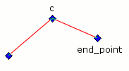

potrace – API reference¶
- potrace.potracelib_version()¶
- Return the potrace library version.
Constants for Bitmap.trace() turnpolicy parameter:
- potrace.TURNPOLICY_BLACK¶
- potrace.TURNPOLICY_WHITE¶
- potrace.TURNPOLICY_LEFT¶
- potrace.TURNPOLICY_RIGHT¶
- potrace.TURNPOLICY_MINORITY¶
- potrace.TURNPOLICY_MAJORITY¶
- potrace.TURNPOLICY_RANDOM¶
Bitmap objects¶
You start a trace by creating a Bitmap instance, e.g.:
from potrace import Bitmap
# Initialize data, for example convert a PIL image to a numpy array
# [...]
bitmap = Bitmap(data)
path = bitmap.trace()
- class potrace.Bitmap(data)¶
Create a Bitmap instance.
The constructor data argument should be a 2D numpy array containing pixel data. Pixels are only interpreted as zero or nonzero.
- trace([turdsize, turnpolicy, alphamax, opticurve, opttolerance, progress_func])¶
Trace the bitmap and wrap the result in a Path instance.
The turdsize parameter can be used to “despeckle” the bitmap to be traced, by removing all curves whose enclosed area is below the given threshold. The current default for the turdsize parameter is 2; its useful range is from 0 to infinity.
The turnpolicy parameter determines how to resolve ambiguities during decomposition of bitmaps into paths. The possible choices for the turnpolicy parameter are:
- TURNPOLICY_BLACK: prefers to connect black (foreground) components.
- TURNPOLICY_WHITE: prefers to connect white (background) components.
- TURNPOLICY_LEFT: always take a left turn.
- TURNPOLICY_RIGHT: always take a right turn.
- TURNPOLICY_MINORITY: prefers to connect the color (black or white) that occurs least frequently in a local neighborhood of the current position.
- TURNPOLICY_MAJORITY: prefers to connect the color (black or white) that occurs most frequently in a local neighborhood of the current position.
- TURNPOLICY_RANDOM: choose randomly.
The current default policy is TURNPOLICY_MINORITY, which tends to keep visual lines connected.
The alphamax parameter is a threshold for the detection of corners. It controls the smoothness of the traced curve. The current default is 1.0; useful range of this parameter is from 0.0 (polygon) to 1.3333 (no corners).
The opticurve parameter is a boolean flag that controls whether Potrace will attempt to “simplify” the final curve by reducing the number of Bezier curve segments. Opticurve=1 turns on optimization, and opticurve=0 turns it off. The current default is on.
The opttolerance parameter defines the amount of error allowed in this simplification. The current default is 0.2. Larger values tend to decrease the number of segments, at the expense of less accuracy. The useful range is from 0 to infinity, although in practice one would hardly choose values greater than 1 or so. For most purposes, the default value is a good tradeoff between space and accuracy.
Path objects¶
Bitmap.trace() returns a Path instance, containing the whole vectorized image.
Curve objects¶
Path objects are made of one or more of Curve objects, which are themselves composed of a list of segments.
Curves can have children curves. Children curves are guaranteed to be enclosed by their parent.
- class potrace.Curve¶
Curve objects represent closed, non intersecting curves.
Curves are made of a list of BezierSegment and CornerSegment objects connected to each other.
- regular¶
- adaptive¶
- Constants for the tesselate() method.
- start_point¶
- The curve starting point.
- segments¶
- The list of segment objects that compose the curve.
- children¶
- The list of children curves.
- tesselate([method, res])¶
Tesselate the curve.
Returns a numpy array containing the curve vertices. The method argument is for selecting the bezier segments tesselation method: adaptive (the default) uses an adaptive tesselation algorithm and regular divides the segments with a fixed number of steps (controled by the res argument).
There are two types of segments, BezierSegment:

and CornerSegment:
Since curves are always closed, segments only store their control points and end point; their starting point is always the previous segment’s end point. You can check the is_corner attribute to determine the segments type easily.